Leaving Dubrovnik behind, we drove north along the Adriatic Highway — the most scenic stretch of driving on the entire trip. The road traces the coastline between the sea and the sheer grey wall of the Dinaric Alps, and somewhere in the middle of it all sits the Makarska Riviera, a 60km arc of pebble beaches and white-walled towns set against the dramatic backdrop of Biokovo Mountain.
Makarska town itself is small, handsome, and entirely without pretension — a working harbour ringed by cafe terraces, a promontory capped by a Franciscan monastery, and the entire southern face of Biokovo reflected in the harbour water at dawn. We arrived early enough to walk the waterfront before the day-trippers from Split arrived, and found the place entirely to ourselves.
The morning light on Biokovo is theatrical. The 1,762-metre limestone massif catches the first sun while the harbour below is still in blue shadow, and the mountain's reflection in the flat morning water produces one of those images that feels almost too composed to be real. We stopped repeatedly on the drive north, unable to put the cameras down.
Makarska Riviera
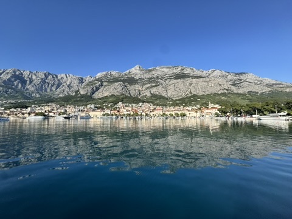
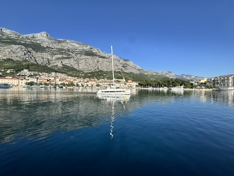
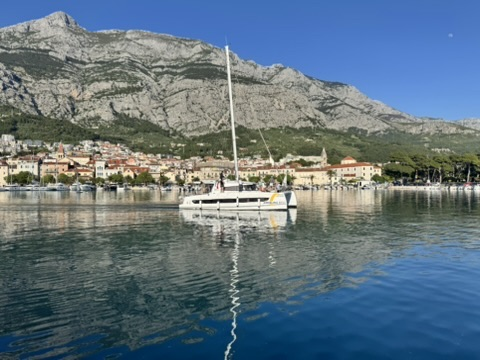
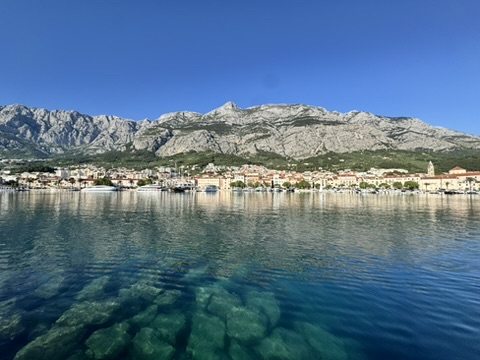
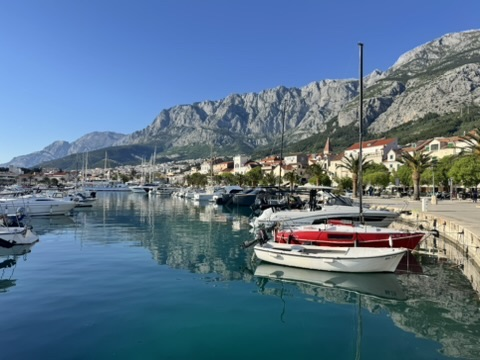
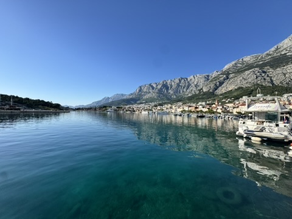
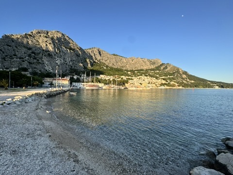
Split is one of those rare cities where the superlatives are not only accurate but actually understated. Diocletian's Palace — built by the Roman emperor between 295 and 305 AD as his retirement residence — was not just preserved after Diocletian's death but colonised. People moved into its corridors, apartments were built into its walls, churches replaced pagan temples, and today some 3,000 people live inside the original Roman perimeter. The palace is not a ruin or a museum; it is a living city quarter, complete with bars, restaurants, and apartments. Walking through the Golden Gate or the Peristyle courtyard and looking up at the cathedral built inside Diocletian's mausoleum remains one of the most extraordinary experiences in European travel.
We stayed at Boutique Hotel Luxe, five minutes from the palace walls, and used it as a base for two full days. The second day we picked up the Jadrolinija catamaran to Hvar Island — an hour's sailing through the islands to one of the most celebrated destinations on the Croatian coast.
Split & Surroundings
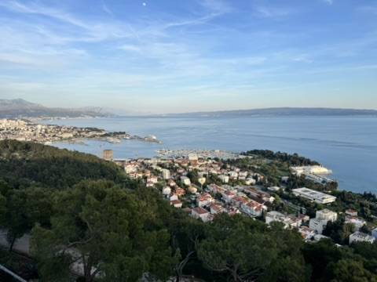
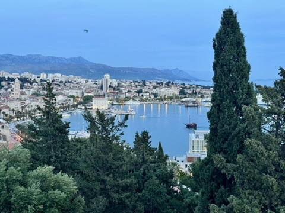
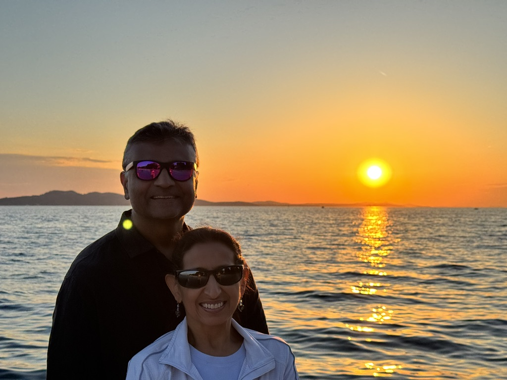
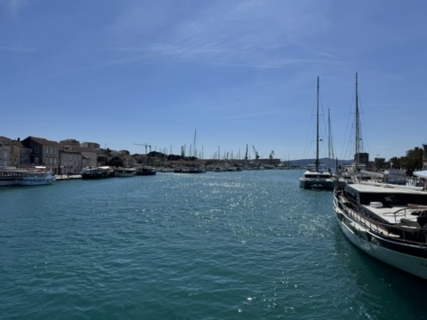
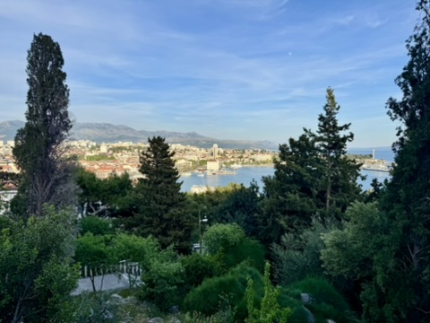
Pelješac Peninsula & Adriatic Coast
The drive between Dubrovnik and Split passes through some of the most dramatic coastal scenery in Europe. The Pelješac Peninsula, which juts out into the Adriatic for some 65km, offers crystalline bays and quiet fishing villages almost entirely free of the tourist traffic that concentrates along the main coastal strip. We stopped at a small cove on the Pelješac that had the kind of water colour — a layered progression from pale turquoise at the shoreline to deep cobalt beyond — that makes you question the reality of it.
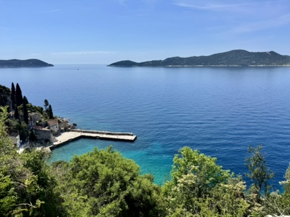
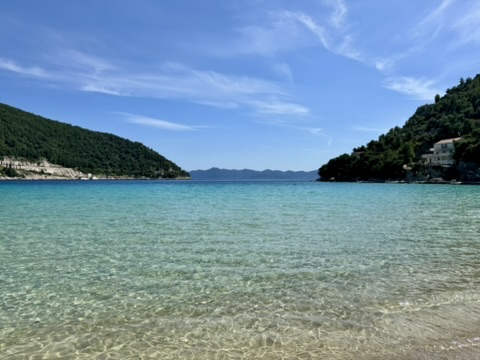
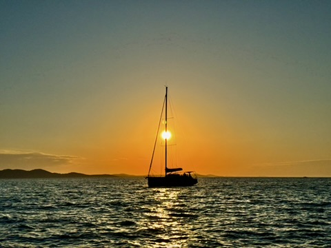
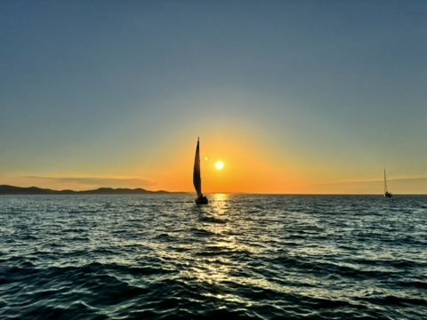
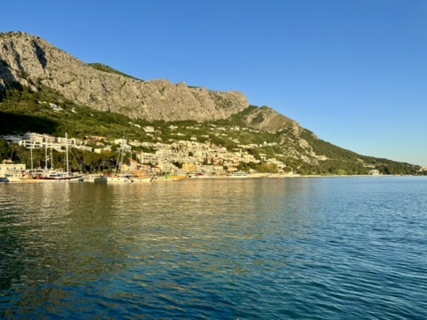
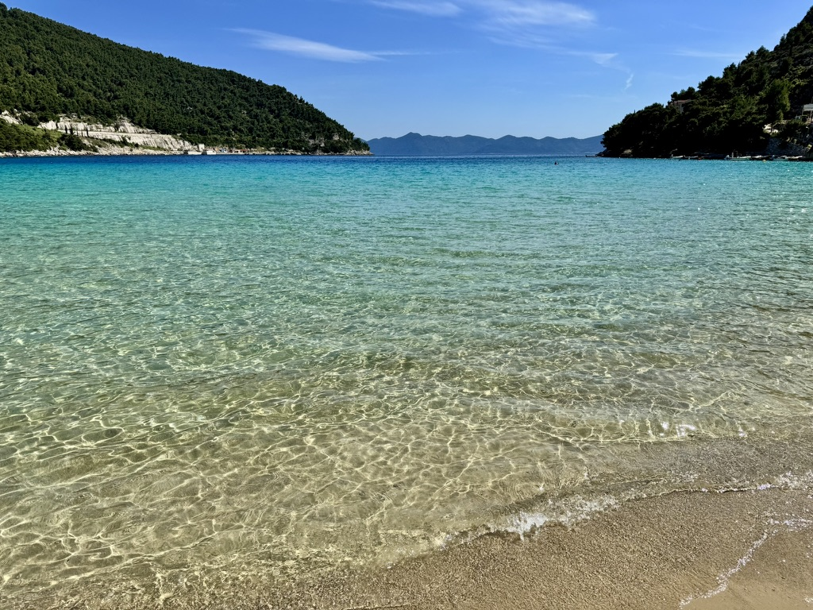
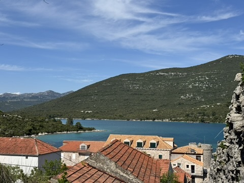